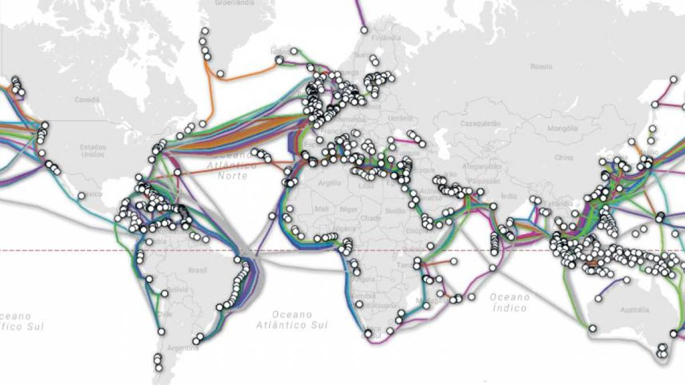

Para começarmos a entender melhor a linguagem HTML, que utilizada principalmente em navegadores para internet, primeiramente precisamos entender um pouco melhor a história da internet e como ela funciona.
Sua origem se deu durante a Guerra Fria (1949-1989), que não foi uma guerra de vias de fato, tratou-se muito mais de batalhas mentais e estratégicas. Durante esse período ocorreram diversas "corridas" entra USA e URSS que modificaram radicalmente a configuração mundial, como por exemplo a corrida espacial, a corrida armamentícia e a corrida tecnológica.
Em 1969, a URSS lançou o primeiro satélite artificial, o Sputnik-1. Como os USA n]ao sabiam exatamente do que aquilo que tratava, surgiram várias teoriais, por exemplo, ele poderia ser um método de espionagem. Na verdade. Posteriormente, descobriu-se que a única função do Sputnik-1 era realizar várias voltas ao redor do planeta e cair dentro da água. Enquanto realizava sua órbita, ele emitiria vários bips que seriam monitorados pela URSS. Ou seja, era simplesmente um teste, mas naquele momento os USA não sabiam disso.
O então presidente, Dwight Eisenhower, preocupado com a evolução tecnológica da URSS, que nesse momento ganhava a corrida, fundou uma agência estatal focada no estudo de tecnologia com finalidade militar, a DARPA ("Defense Advanced Research Projects Agency" - Agência Avançada de Pesquisa de Projetos de Defesa). Essa agência foi criada em 1969 e existe até ps dias atuais.
Ainda no ano de sua criação, a agência propôs uma solução para resolver um dos maiores problemas norte-amercianos: por ter dimensões continentais, suas bases militares ficavam geograficamente muito distantes umas das outras, e caso a URSS fosse capaz de destruir uma dessas bases militar, as outras deveriam conter os mesmos dados, para caso ocorresse um ataque, os danos fossem somente materiais, e não informacionais. Pensando nisso foi criada a Arpanet.
A Arpanet começou com apenas 4 pontos conectados entre si, todos próximos da costa oeste. Os quatro computadores conectados nessa rede primordial eram:
O próposito dessa rede era criar uma cópia de segurança entre um computador e outro. Já que eles poderiam se comunicar a trocar informações
Como podemos notar, esse 4 computadores eram diferentes entre si: 2 computadores da SDS, 1 da DEC e 1 da IBM. E nessa época, computadores diferentes falavam linguagens diferentes, portanto, a princípio, eles não poderiam se comunicar entre si. Pensando nisso, pesquisadores da UCLA (Universidade da Califórnia) criaram um protocolo chamado NCP ("Network Control Protocol" - Protocolo de controle de rede).
Protocolos são um "idioma único" que todas as máquinas conseguem falar, para que assim, elas possam se comunicar. O NCP era um protocolo muito inicial e limitado: se um computador quisesse se comunicar com outro, a rede parava, era criado um canal de comunicação entre essas duas máquinas, e começava a transmissão de dados. Quando terminava a transmissão, a rede era liberada. Para 4 computadores, até que funcionava bem, mas essa rede foi crescendo cada vez mais.
Em 1972, o NCP já tinha evoluído um pouco, mas já estava impraticável utilizado com o tanto de ponto que existiam nesse momento. Nesse momento, dois pesquisadores criaram dois protocolos diferentes, que posteriormente foram unificados. O Bob Kahn criou o TCP ("Transmission Control Protocol" - Protocolo de Controle de Transmissão), o principal foco desse protocolo era sanar o problema do NCP de ter que parar a rede cada vez que fosse necessário fazer uma transmissão. Só que a essa altura, a rede já estava muito grande, e o TCP tinha dificuldade na identificação desses pontos. Nesse momento, Vint Cerf criou um protocolo de identificação de máquinas, o IP ("Internet Protocol" - Protocolo de Internet). Juntando esses dois protocolos, criou-se o TCP IP, que é o protocolo que usamos até hoje, mas claro que em uma versão muito mais evoluída.
Em 1977, tivemos a primeira comunicação via satélite, que ocorreu com a Universidade de Londres. Com o crescimento da Arpanet, ela passou a incluir não apenas centro militares, como também universidades e empresas. Por isso, o militares não queriam mais serem responsáveis por essa rede, e houve uma divisão. A parte militar ficou com uma rede chamada MILNET, a parte científica ficou com uma rede denominada NSFNET (NSF - "National Science Foundation"), e além dessas haviam várias redes comerciais.
Todas as redes queriam se comunicar entre si, criar uma grande rede que as interconectasse. Assim foi criada a Interconnect Networking, que foi abreviada para Internetworking, que posteriormente foi simplificado, e assim surge o termo "Internet".
A internet que temos hoje é gigantesca e cobre basicamente o mundo inteiro. Como podemos verificar no mapa a seguir:
A comunicação entre os continentes acontece através de cabos submarinos. Já a comunicação interna acontece das mais diversas formas: via satélite, balão de comunicação, transmissão via antena, cabeamento aéreo ou subterrâneo, etc.
Nesse momento, podemos nos perguntar: ok, entendi como a internet surgiu, mas como funciona a comunicação entre esses pontos de acesso? Como eu transfiro dados de um ponto "A" até um ponto "B"
Para responder essa pergunta, é importante definir dois conceitos muito importantes: Cliente e Servidor.Geralmente os clientes e servidores se comunicam através de uma rede de computadores, e localizam-se em computadores distintos, mas tanto o cliente quanto o servidor podem residir na mesma máquina.
Um servidor é um host que está executando um ou mais serviços ou programas que compartilham recursos com os clientes. Um cliente não compartilha qualquer de seus recursos, mas solicita um conteúdo ou função do servidor. Os clientes iniciam sessões de comunicação com os servidores que aguardam requisições de entrada.
O modelo cliente-servidor (client/server model) foi desenvolvido na Xerox PARC durante os anos 70. Este modelo é actualmente o predominante nas redes informáticas. Email, a World Wide Web e redes de impressão são exemplos comuns deste modelo.
Principais características do cliente:
Pincipais características do servidor:
Na maioria dos casos, a arquitetura cliente-servidor permite que os papéis e responsabilidades de um sistema de computação possam ser distribuídos entre vários computadores independentes que são conhecidos por si só através de uma rede. Isso cria uma vantagem adicional para essa arquitetura: maior facilidade de manutenção.
Todos os dados são armazenados nos servidores, que geralmente possuem controles de segurança muito maiores do que a maioria dos clientes. Os servidores podem controlar melhor o acesso a recursos, para garantir que apenas os clientes com credenciais válidas possam aceder e alterar os dados. Como o armazenamento de dados é centralizado, as atualizações dos dados são muito mais fáceis de administrar em comparação com o paradigma P2P. Em uma arquitetura P2P, atualizações de dados podem precisar ser distribuídas e aplicadas a cada nó na rede, o que consome tempo e é passível de erro, já que pode haver milhares ou mesmo milhões de nós;
Muitas tecnologias avançadas de cliente-servidor estão disponíveis e foram projetadas para garantir a segurança, facilidade de interface do usuário e facilidade de uso.
Uma das desvantagens desse modelo é que clientes podem solicitar serviços, mas não podem oferecê-los para outros clientes, sobrecarregando o servidor, pois quanto mais clientes e mais informações, maior a demanda de banda. Com isso, um servidor poderá ficar sobrecarregado caso receba mais solicitações simultâneas dos clientes do que pode suportar. Este modelo não possui a robustez de uma rede baseada em P2P.
Na arquitetura cliente-servidor, se um servidor crítico falha, os pedidos dos clientes não poderão ser cumpridos. Já nas redes P2P, os recursos são normalmente distribuídos entre vários nós. Mesmo se uma ou mais máquinas falharem no momento de download de um arquivo, por exemplo, as demais ainda terão os dados necessários para completar a referida operação.
Tendo compreendido a diferença entre cliente e servidor, a próxima questão a ser respondida é como se dá a transmissão de dados entre eles.
Vamos supor que você deseje fazer o download de uma imagem. Caso houvesse uma tentativa de transmitir essa imagem de um só vez, de forma integral, haveria um congestionamento na rede. Para evitar esse problema, o IP identifica o ponto A e o ponto B, que irão se comunicar entre si, e o TCP quebra essa imagem (ou qualquer outro tipo de dado) em vários pacotes menores, e esses pacotes são enviados completamente fora de ordem, pelos mais diversos caminhos. Ou seja, quando fazemos um download de um arquivo, ele não vem inteiro, mas vem fragmentado e fora de ordem, cada pacote segue uma rota diferente, e se acontece de um desses pacotes de perder, ele será reenviado. O importante é que no final da transmissão, todos os pacotes que compões o arquivo solicitado estejam no seu computador, onde ele será remontado pelo TCP do seu computador. Portanto o TCP do servidor quebra o arquivo para facilitar o envio, e quando todas as "peças" estão na máquina que fez a solicitação, o TCP do cliente realizava a remontagem.
Para compreender melhor esse processo, assista ao documentário "How does the internet work?" .
A princípio, a internet não tinha nenhum recurso gráfico. Era basicamente uma tela preta com letras verdes
Nessa época, o protocolo utilizado era chamado "gopher". Não havia o ouso de mouse, ou seja, a navegação era feita através de linha de comando e do uso das setas. Já existia imagens, mas elas não era exibidas no navegador, você precisava fazer o download para conseguir visualizá-las no ambiente gráfico da sua máquina.
Havia também algumas palavra que ficavam destacadas, você poderia usar as setas do seu teclado selecioná-las e ser encaminhado para uma outra página.
Em 1993, a internet estava prestes a viver uma grande transformação. Neste ano, em genebra, Tim Berners-Lee estava particpando de um projeto parecido com o gopher, e eles passou a chamar esses termos que poderia ser clicados e que te enviariam para outra página de hyperlinks (ou links). Ele evoluiu muito essa tecnologia até chegar a um novo protocolo que seria incluído no TCP IP. O nome do protocolo criada por ele foi o HTTP ("hyper text transfer protocol" - protocolo de transferência de hipertexto), que é utilizado até hoje

Além da criação desse protocolo, ele também foi responsável pela criação da linguagem HTML ("hypertext Markeup Language" - linguagem de marcação de hipertexto), que aliás, foi a base utilizada para a criação do protocolo HTTP.
Essas duas invenções basicamente deram origem a internet que conhecemos hoje. Aliás, esse formato que utilizamos de forma corrente não abrange toda a internet, mas é uma parte dela, que também foi nomeada pelo Tim Berners-Lee. Quando navegamos em páginas que utilizavam o protocolo HTTP e construídas utilizando HTML, estamos na world wide web ("www" - rede de alcance mundial).
Outro elemento que precisou ser criado para que toda essa engrenagem funcionasse, foi um navegador compatível com o protocolo HTTP. E o primeiro navegador criado foi o Mosaic, criado por Mark Andreessen.
Erroneamente alguns consideram que a world wide web seja sinônimo da internet, o que não é verdade. Mas então como funciona essa organização?
Conforme foi dito anteriormente a Internet é a conexão de várias redes diferentes a nível mundial. Dentro dela temos um conjunto de servidores especializados em determinado tipo de serviço ou protocolo.Por exemplo:
A world wide web é uma subrede da internet, especialida no protocolo HTTP, ou seja, uma rede que engloba todos os servidores HTTP. E claro que essas redes baseadas em servidores diferentes podem se comunicar entre si, afinal, essa foi a proposta da criação da internet desde o começo. Um exemplo disso, é como usamos uma página de protocolo http para termos acesso ao nosso e-mail.
/